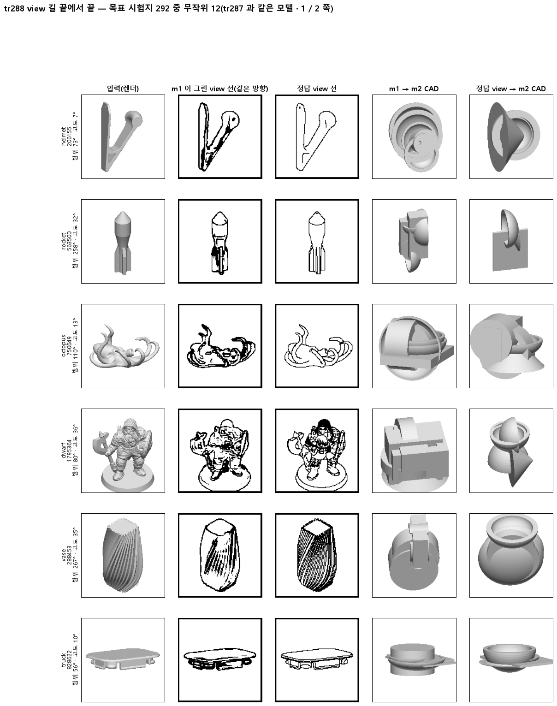

실험 m2_tr0288_h039_view끝에서끝
목표 G1.2 view 모음 → 파츠별 CAD code(CadQuery · 그 전 「3 면도 → 파츠별 CAD」 · 지금 M2 는 위 · 앞 · 옆 고정 세 장만 받음 → 아무 각도 N 장으로 바꿀 것 · 11-20) · G1 첫 제품 — 피규어 · 메카 사진 여러 장 + 치수 → 숨은선 3 면도 + 파츠별 CAD · G0 임의의 이미지 → CAD 코드 · 빌린 가정 4: 정사영 · 시점앎 · 흰바탕 · 렌더화풍 · 갚는 계획: 진단 · 목표 시험지(원화CAD짝 시험 292 · tr245 렌더 둘 · 시점 앎 · 흰 바탕) — 바탕 장부의 첫 목표판 결과(「없을 때」) · 다음 = 시점 모름(각도 추정) · 실물 사진(tr220 시험지) · 목표 시험지 값: 안 잼 (!)
목표 시험지에서 합의한 view 길(m1 본 방향 view → view m2)로 끝에서 끝을 이으면, 거친 모양을 m1 과 m2 중 어디서 더 잃나?
판정 · H39 기각(m1 몫 − m2 몫 −0.553 [−0.574, −0.533]) — 목표 시험지 view 길에서 m1(본 방향 선 F 0.91)은 모양을 거의 안 잃고(m1 → m2 0.449 · 정답 view → m2 0.448) 끝에서 끝 잃음은 m2 몫(0.55) · m2 CAD 는 남의 정답 실루엣 바닥 0.35 보다 0.10 높을 뿐 · 바탕 장부 「없을 때」 목표판 결과 = 0.449 · 다음 m2: 기준점(H15) 적용 학습 · m1 선 이어 배우기 · 표현력
| 가설 | 주장 | 결과 | 근거 |
|---|---|---|---|
| H39 | 목표 시험지 view 길에서 끝에서 끝 거친 모양을 잃는 몫은 m1(본 방향 선)이 m2(view 모음 → CAD)보다 크다 | 기각 | 세 장 실루엣 IoU 평균(가운데) m1 → m2 CAD 0.449(0.454) · 정답 view → m2 CAD 0.448(0.453) — m1 몫 −0.0007 · m2 몫 0.552 · 바닥(남의 정답 실루엣 · 모델마다 5) 0.352(0.338) · m1 view 선 F(2 화소 · 정답 view 선 대비) 0.913(0.933) · 두 길 IoU 상관 0.708 · 사분위 m1 → m2 0.293 · 0.374 · 0.454 · 0.535 · 0.608(10 · 25 · 50 · 75 · 90 %) · 못 지음 m1 5 · 정답 1(Null TopoDS 등 · IoU 0 으로 셈) · m2 몸 수 6 개 m1 길 170 · 정답 길 154 / 292 |
분석
한 줄로
물음: 목표 시험지(피규어 · 메카 · 소품 292)에서 합의한 view 길(m1 본 방향 view → view m2)로 끝에서 끝을 이으면, 거친 모양을 m1 과 m2 중 어디서 더 잃나?
답: m2 에서 잃는다 — 미리 세운 「m1 이 더 잃는다」는 기각. m1 이 그린 선으로 지은 CAD(실루엣 IoU 0.449)와 정답 선으로 지은 CAD(0.448)가 같다. 잃는 몫은 전부 m2(0.55)이고, m2 CAD 는 아무 다른 모델의 정답 실루엣(바닥 0.35)보다 0.10 높을 뿐이다.
왜 이 실험을 했나
tr268 ~ 287 이 11-20 합의(m1 = image → 본 방향 view · m2 = view 모음 → CAD)와 다른 90° 3면도 꼴이었다는 것을 사용자가 짚었다. 그 꼴로 이은 tr287 에서는 m1 이 그린 3면도가 얼룩이었고 m2 CAD 는 입력과 상관없이 같은 덩어리였다. 합의한 꼴로 다시 이어, 바탕 장부의 첫 「없을 때」 기준 결과를 목표 시험지에서 냈다. 우리 목표는 임의의 이미지 → CAD 코드다.
바꾼 것 하나
m2 에 넣는 선만 바꿨다. 대조는 같은 시점의 정답 view 선(세운 메시 · 꺾인 모서리 ∪ 윤곽)이고, 실제 길은 m1 바탕(tr222 · 시점을 옮기지 않음)이 렌더 둘에서 그린 선이다. m2 는 바탕m2(view 모음 · 기준점 끔 · tr263 view 갈래)이고 각도는 렌더 각도를 그대로 준다. 자는 CAD 를 3면도로 다시 그려 채운 실루엣과 정답 3면도의 IoU 다(tr287 과 같은 자 · 3면도는 결과물로만). 카드는 숫자를 보기 전에 커밋했다(ee829c63).
결과

| 목표 시험지 292 | m1 → m2 | 정답 view → m2 | 바닥(남의 정답) | 판정 |
|---|---|---|---|---|
| 세 장 실루엣 IoU 평균 | 0.449 | 0.448 | 0.352 | — |
| m1 몫 − m2 몫 | −0.553 [−0.574, −0.533] · 기각 |
m1 몫 = IoU(정답 view → m2) − IoU(m1 → m2) · m2 몫 = 1 − IoU(정답 view → m2). 바닥 = 모델마다 다른 모델 다섯의 정답 실루엣을 낸 IoU.
왜 이렇게 나왔나
확인한 것
- m1 은 본 방향 그대로면 선을 잘 그린다. 정답 view 선 대비 F 0.913(가운데 0.933)이다. 옛 길(시점을 옮겨 3면도)에서는 같은 모델 12 개가 모두 얼룩이었다(tr287).
- m1 선을 넣든 정답 선을 넣든 m2 CAD 는 같다(0.449 대 0.448 · 모델끼리 상관 0.71).
- m2 는 몸 6 칸을 꽉 채운다(m1 길 170 · 정답 길 154 / 292). 썸네일에서 피규어 · 차 · 버스는 입력을 안 닮는다. 뚜껑 · 톱니처럼 단순한 소품만 큰 윤곽이 조금 닮는다.
짐작 (아직 확인 안 함)
- m2 는 생성기 부품(7 종류 · 몸 6 개)의 정답 선만 배운 시제품이라, 피규어의 선은 본 적이 없고 그 모양을 낼 어휘도 없을 것이다. 둘 중 어느 쪽이 큰지는 가르지 않았다.
한계
- 실루엣 IoU 는 거친 모양만 본다. 디테일 · 몸 나눔 · 종류는 안 본다.
- 입력은 렌더(흰 바탕 · 시점 앎 · 정사영)다. 실물 사진과 각도 추정은 아직이다.
- 정답 view 선은 메시 꺾임 30° 라 조각 메시는 선 더미다.
- 못 지은 CAD(m1 길 5 · 정답 길 1)는 0 으로 셌다. 그림 자를 곳은 판정 뒤 실제 판 크기로 고쳤다.
배운 것과 다음
합의한 view 길에서는 m1 이 거의 잃지 않는다 — 끝에서 끝을 막는 것은 m2 다.
- 기준점(H15)을 바탕 m2 에 켜고 제대로 다시 배워 이 판 · 이 자로 견준다(바탕 장부 적용 대기).
- m2 를 m1 이 그린 선으로 이어 배운다.
- m2 표현력(몸 수 · 종류)을 본다 — 피규어를 목표로 하면 어휘 자체가 문제일 수 있다.
실험 기록
- 카드(결과 전 커밋 ee829c63 · H39_A_Ca · 입력꼴 칸 처음) · 끝288.py(m1 · 정답 · 망 · 짓기 · 재기 · 판 · 흐름) · 잼.json · 흐름.png · 판_0.png · 판_1.png · 원본 out/설명/캐드부품/모델288(m1지도.npy · 정답view.npz · 출력.npz · 지음.npy · 셈.npz)
- 전체 짓기는 메모리 부족으로 두 번 끊겼다(일꾼 2). 16 개마다 부분 저장하게 고치고 일꾼 1 로 다시 지었다(사용자 「1번으로 하자고」).
- 바탕 장부(하네스/바탕.yaml)에 목표판 결과 0.449 를 「없을 때」 기준으로 적었다.